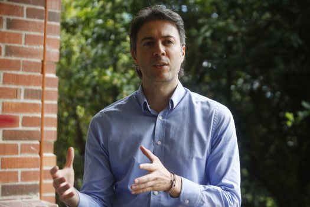
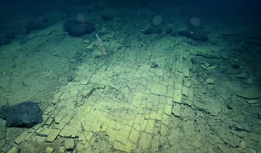
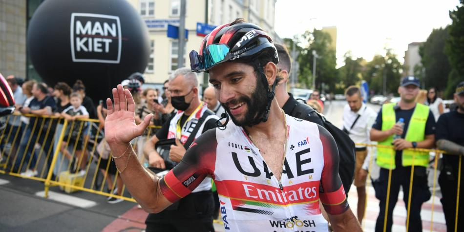

politics section
-
Let them defeat us in court, but a fair one": Daniel Quintero defends himself
In an interview with El Espectador, the suspended mayor of Medellín says that the Attorney General's Office acted politically by removing him from office while investigating him for political intervention. He also attacks General Zapateiro, commander of the Army, who has received criticism for a similar intervention in the elections.
-
scientific news
They find a "yellow brick road" at the bottom of the Pacific
The research can be followed live through the scientists' YouTube channel
sports section
Fernando Gaviria regrets leaving the Giro d'Italia in white
Los embaladores perdieron este jueves la última oportunidad de triunfo en la carrera.
